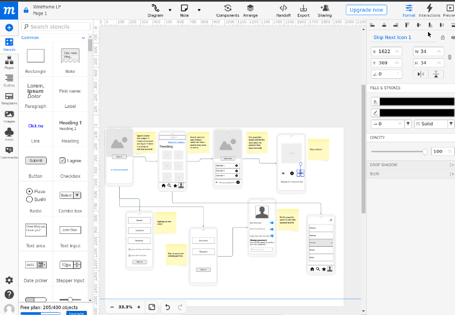
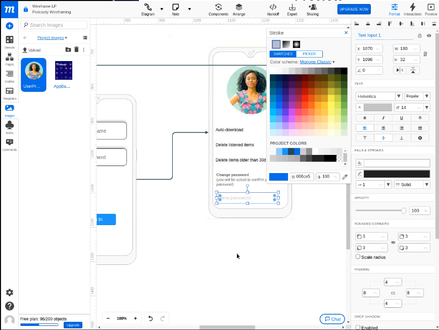
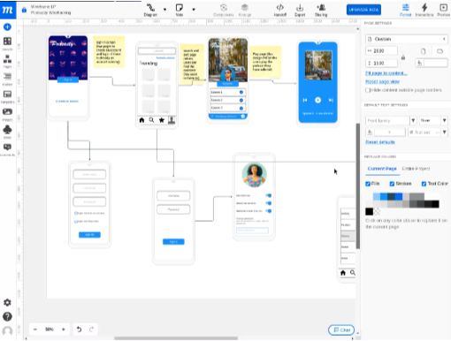

Project 1: Designing User Experiences with Moqups



In Project 1, I delved into the world of user experience design by utilizing Moqups – a powerful online platform for creating interactive wireframes, mockups, and prototypes. With a focus on enhancing usability and visual appeal, I crafted intuitive interfaces for web and mobile applications. Leveraging Moqups' versatile tools, I seamlessly translated conceptual ideas into tangible designs, enabling effective communication with stakeholders. This project allowed me to explore the importance of user-centered design, refine my skills in digital prototyping, and gain a deeper appreciation for crafting user-friendly digital experiences.